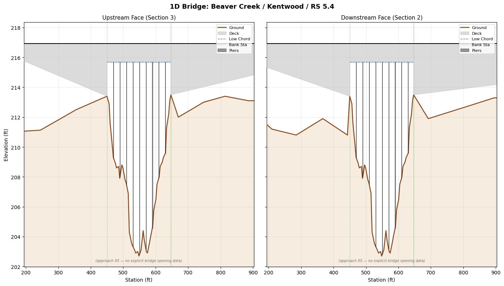
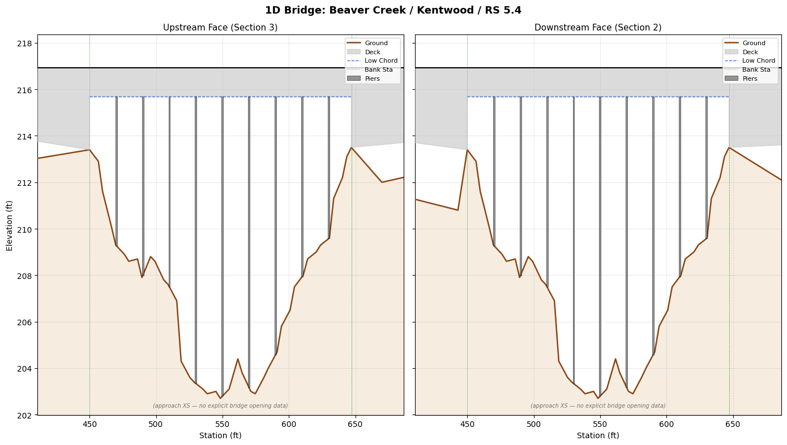

219 - 1D Bridge Cross-Section Plotting with Deck/Pier Overlay¶
HEC-RAS 1D bridges use four cross-sections:
| Section | Location | Description |
|---|---|---|
| 4 | Upstream approach | Regular XS upstream of bridge embankment |
| 3 | Upstream face | Ground profile at upstream bridge opening |
| 2 | Downstream face | Ground profile at downstream bridge opening |
| 1 | Downstream approach | Regular XS downstream of bridge embankment |
This notebook demonstrates how to plot all four sections aligned at the channel centerline, with deck and pier overlays matching HEC-RAS conventions.
Sections 2 and 3 are read via GeomBridge.get_bridge_opening_xs(), which
returns explicit BR U / BR D data when present, or falls back to the
adjacent approach cross-section.
# =============================================================================
# DEVELOPMENT MODE TOGGLE
# =============================================================================
USE_LOCAL_SOURCE = True
if USE_LOCAL_SOURCE:
import sys
from pathlib import Path
local_path = str(Path.cwd().parent)
if local_path not in sys.path:
sys.path.insert(0, local_path)
print(f"LOCAL SOURCE MODE: Loading from {local_path}/ras_commander")
else:
print("PIP PACKAGE MODE: Loading installed ras-commander")
LOCAL SOURCE MODE: Loading from G:\GH\ras-commander/ras_commander
from pathlib import Path
import matplotlib.pyplot as plt
import matplotlib.patches as mpatches
import numpy as np
import pandas as pd
from ras_commander import RasExamples
from ras_commander.geom import GeomBridge
Extract example project and select a bridge¶
import re
project_path = RasExamples.extract_project("Bridge Hydraulics", suffix="nb219")
geom_file = sorted(
p for p in Path(project_path).iterdir()
if p.is_file() and re.search(r"\.g\d\d$", p.name.lower())
)[0]
bridges = GeomBridge.get_bridges(geom_file)
print(f"Geometry file: {geom_file.name}")
print(f"Found {len(bridges)} bridge(s):")
bridges[["River", "Reach", "RS", "NumDecks", "NumPiers", "DeckWidth"]]
2026-05-20 14:00:02 - ras_commander.RasExamples - INFO - Found zip file: C:\Users\bill\AppData\Local\ras-commander\examples\Example_Projects_7_0.zip
2026-05-20 14:00:02 - ras_commander.RasExamples - INFO - Loading project data from CSV...
2026-05-20 14:00:02 - ras_commander.RasExamples - INFO - Loaded 67 projects from CSV.
2026-05-20 14:00:02 - ras_commander.RasExamples - INFO - ----- RasExamples Extracting Project -----
2026-05-20 14:00:02 - ras_commander.RasExamples - INFO - Extracting project 'Bridge Hydraulics' as 'Bridge Hydraulics_nb219'
2026-05-20 14:00:02 - ras_commander.RasExamples - INFO - Successfully extracted project 'Bridge Hydraulics' to G:\GH\ras-commander\examples\example_projects\Bridge Hydraulics_nb219
Geometry file: beaver.g01
Found 1 bridge(s):
| River | Reach | RS | NumDecks | NumPiers | DeckWidth | |
|---|---|---|---|---|---|---|
| 0 | Beaver Creek | Kentwood | 5.4 | 30 | 9 | 2.6 |
row = bridges.iloc[0]
river, reach, rs = row["River"], row["Reach"], str(row["RS"])
deck_df = GeomBridge.get_deck(geom_file, river, reach, rs)
piers_df = GeomBridge.get_piers(geom_file, river, reach, rs)
xs_up_inside = GeomBridge.get_bridge_opening_xs(geom_file, river, reach, rs, section="upstream")
xs_dn_inside = GeomBridge.get_bridge_opening_xs(geom_file, river, reach, rs, section="downstream")
print(f"Bridge: {river} / {reach} / RS {rs}")
print(f" Deck points: {len(deck_df)} ({deck_df['Location'].unique().tolist()})")
print(f" Piers: {len(piers_df)}")
print(f" Section 3 (upstream face): {len(xs_up_inside)} pts [source: {xs_up_inside['Source'].iloc[0]}]")
print(f" Section 2 (downstream face): {len(xs_dn_inside)} pts [source: {xs_dn_inside['Source'].iloc[0]}]")
2026-05-20 14:00:02 - ras_commander.geom.GeomBridge - INFO - Extracted deck geometry for Beaver Creek/Kentwood/RS 5.4: 6 points
2026-05-20 14:00:02 - ras_commander.geom.GeomBridge - INFO - Extracted 9 piers for Beaver Creek/Kentwood/RS 5.4
2026-05-20 14:00:02 - ras_commander.geom.GeomBridge - INFO - Extracted upstream bridge opening XS (66 pts) for Beaver Creek/Kentwood/RS 5.4 from adjacent approach XS
2026-05-20 14:00:02 - ras_commander.geom.GeomBridge - INFO - Extracted downstream bridge opening XS (63 pts) for Beaver Creek/Kentwood/RS 5.4 from adjacent approach XS
Bridge: Beaver Creek / Kentwood / RS 5.4
Deck points: 6 (['upstream'])
Piers: 9
Section 3 (upstream face): 66 pts [source: approach_xs]
Section 2 (downstream face): 63 pts [source: approach_xs]
Plot function: plot_1d_bridge_xs¶
The function handles the key challenge of 1D bridges: each of the four cross-sections may have different station ranges because they were hand-drawn independently. We align them at the channel centerline using bank stations, so the overbank and channel features line up visually.
def _interp_ground_at(xs_df, stations):
"""Interpolate ground elevation at arbitrary stations from an XS DataFrame."""
return np.interp(stations, xs_df["Station"].values, xs_df["Elevation"].values)
def plot_1d_bridge_xs(
geom_file,
river,
reach,
rs,
channel_width_factor=1.5,
figsize=(14, 8),
):
"""
Plot all 4 cross-sections at a 1D bridge with deck and pier overlays.
Parameters
----------
geom_file : Path
HEC-RAS geometry file (.g##).
river, reach, rs : str
Bridge location identifiers.
channel_width_factor : float
How much wider than the channel opening to show (1.5 = 50% padding).
figsize : tuple
Figure size.
Returns
-------
fig, axes : matplotlib Figure and array of two Axes (upstream, downstream).
"""
deck_df = GeomBridge.get_deck(geom_file, river, reach, rs)
piers_df = GeomBridge.get_piers(geom_file, river, reach, rs)
xs_sec3 = GeomBridge.get_bridge_opening_xs(geom_file, river, reach, rs, section="upstream")
xs_sec2 = GeomBridge.get_bridge_opening_xs(geom_file, river, reach, rs, section="downstream")
up_deck = deck_df[deck_df["Location"] == "upstream"]
dn_deck = deck_df[deck_df["Location"] == "downstream"]
if dn_deck.empty:
dn_deck = up_deck
# --- Channel-center alignment ---
# The opening is where LowChord is elevated (not a placeholder value near overbank ground).
all_lc = up_deck["LowChord"].values
all_sta = up_deck["Station"].values
if len(all_lc) >= 2:
lc_max = all_lc.max()
opening_mask = all_lc > (all_lc.min() + 0.1 * (lc_max - all_lc.min()))
opening_stations = all_sta[opening_mask]
if len(opening_stations) >= 2:
channel_center = (opening_stations.min() + opening_stations.max()) / 2
else:
channel_center = all_sta.mean()
else:
channel_center = all_sta.mean()
if len(all_sta) >= 2:
opening_width = (opening_stations.max() - opening_stations.min()
if len(opening_stations) >= 2
else all_sta.max() - all_sta.min())
else:
opening_width = 200
half_view = opening_width * channel_width_factor
view_left = channel_center - half_view
view_right = channel_center + half_view
fig, axes = plt.subplots(1, 2, figsize=figsize, sharey=True)
fig.suptitle(f"1D Bridge: {river} / {reach} / RS {rs}", fontsize=13, fontweight="bold")
sections = [
(axes[0], "Upstream Face (Section 3)", xs_sec3, up_deck,
"UpstreamStation", "UpstreamWidths", "UpstreamElevations"),
(axes[1], "Downstream Face (Section 2)", xs_sec2, dn_deck,
"DownstreamStation", "DownstreamWidths", "DownstreamElevations"),
]
elev_min_global = float("inf")
elev_max_global = float("-inf")
for ax, title, xs_df, face_deck, pier_sta_col, pier_w_col, pier_e_col in sections:
xs_sta = xs_df["Station"].values
xs_elev = xs_df["Elevation"].values
# Earth fill below ground profile
ax.fill_between(xs_sta, xs_elev, y2=0, color="burlywood", alpha=0.25, zorder=1)
# Ground profile
ax.plot(xs_sta, xs_elev,
color="saddlebrown", linewidth=1.8, zorder=3, label="Ground")
# Deck polygon — clip lower bound at ground elevation so no fill below grade
d_sta = face_deck["Station"].values
d_hi = face_deck["Elevation"].values
d_lo = face_deck["LowChord"].values
ground_at_deck = _interp_ground_at(xs_df, d_sta)
d_lo_clipped = np.maximum(d_lo, ground_at_deck)
ax.fill_between(d_sta, d_lo_clipped, d_hi,
color="0.75", alpha=0.55, zorder=4, label="Deck")
ax.plot(d_sta, d_hi, color="black", linewidth=1.5, zorder=5)
# Low chord — only display where above ground
lc_above = d_lo > ground_at_deck
masked_lc = np.where(lc_above, d_lo, np.nan)
ax.plot(d_sta, masked_lc, color="royalblue", linewidth=1.0, linestyle="--",
zorder=5, label="Low Chord")
# Bank station markers (opening limits from deck data)
if len(opening_stations) >= 2:
for bk_sta in [opening_stations.min(), opening_stations.max()]:
ax.axvline(bk_sta, color="green", linewidth=0.8, linestyle=":",
alpha=0.6, zorder=2)
ax.axvline(bk_sta, color="green", linewidth=0.8, linestyle=":",
alpha=0.6, zorder=2, label="Bank Sta")
# Pier polygons — clip bottom at ground elevation
first_pier = True
for _, p in piers_df.iterrows():
sta = p[pier_sta_col]
widths = p[pier_w_col]
elevs = p[pier_e_col]
if not widths or not elevs:
continue
ground_at_pier = float(_interp_ground_at(xs_df, [sta])[0])
clipped_elevs = [max(e, ground_at_pier) for e in elevs]
left_edges = [sta - w / 2 for w in widths]
right_edges = [sta + w / 2 for w in widths]
poly_x = left_edges + right_edges[::-1]
poly_y = clipped_elevs + clipped_elevs[::-1]
ax.fill(poly_x, poly_y, color="dimgray", alpha=0.7, zorder=6,
edgecolor="black", linewidth=0.5,
label="Piers" if first_pier else None)
first_pier = False
# Fallback indicator
source = xs_df["Source"].iloc[0]
if source == "approach_xs":
ax.text(0.5, 0.02, "(approach XS — no explicit bridge opening data)",
transform=ax.transAxes, ha="center", fontsize=7,
fontstyle="italic", color="0.45")
ax.set_xlim(view_left, view_right)
ax.set_title(title, fontsize=11)
ax.set_xlabel("Station (ft)")
ax.grid(True, alpha=0.25, zorder=0)
ax.legend(fontsize=8, loc="upper right")
vis_mask = (xs_sta >= view_left) & (xs_sta <= view_right)
if vis_mask.any():
elev_min_global = min(elev_min_global, xs_elev[vis_mask].min())
elev_max_global = max(elev_max_global, d_hi.max())
# Tighten y-axis around visible features
if elev_min_global < elev_max_global:
y_range = elev_max_global - elev_min_global
for ax in axes:
ax.set_ylim(elev_min_global - 0.05 * y_range, elev_max_global + 0.1 * y_range)
axes[0].set_ylabel("Elevation (ft)")
fig.tight_layout()
return fig, axes
Plot the Bridge Hydraulics example bridge¶
The Beaver Creek bridge at RS 5.4 has 9 piers spanning the channel opening between stations 450 and 647. The deck is at elevation 216.93 with a low chord of 215.7 in the channel and 200.0 on the overbanks (embankment fill).
fig, axes = plot_1d_bridge_xs(geom_file, river, reach, rs, channel_width_factor=1.8)
plt.savefig("219_beaver_creek_bridge.png", dpi=150, bbox_inches="tight")
plt.show()
2026-05-20 14:00:02 - ras_commander.geom.GeomBridge - INFO - Extracted deck geometry for Beaver Creek/Kentwood/RS 5.4: 6 points
2026-05-20 14:00:02 - ras_commander.geom.GeomBridge - INFO - Extracted 9 piers for Beaver Creek/Kentwood/RS 5.4
2026-05-20 14:00:02 - ras_commander.geom.GeomBridge - INFO - Extracted upstream bridge opening XS (66 pts) for Beaver Creek/Kentwood/RS 5.4 from adjacent approach XS
2026-05-20 14:00:02 - ras_commander.geom.GeomBridge - INFO - Extracted downstream bridge opening XS (63 pts) for Beaver Creek/Kentwood/RS 5.4 from adjacent approach XS

Zoomed view: channel opening only¶
Setting channel_width_factor=0.7 zooms in to just the bridge opening,
showing the pier spacing and low-chord clearance detail.
fig, axes = plot_1d_bridge_xs(geom_file, river, reach, rs, channel_width_factor=0.7)
plt.show()
2026-05-20 14:00:02 - ras_commander.geom.GeomBridge - INFO - Extracted deck geometry for Beaver Creek/Kentwood/RS 5.4: 6 points
2026-05-20 14:00:02 - ras_commander.geom.GeomBridge - INFO - Extracted 9 piers for Beaver Creek/Kentwood/RS 5.4
2026-05-20 14:00:02 - ras_commander.geom.GeomBridge - INFO - Extracted upstream bridge opening XS (66 pts) for Beaver Creek/Kentwood/RS 5.4 from adjacent approach XS
2026-05-20 14:00:02 - ras_commander.geom.GeomBridge - INFO - Extracted downstream bridge opening XS (63 pts) for Beaver Creek/Kentwood/RS 5.4 from adjacent approach XS

Data inspection¶
The tables below show the raw deck and pier geometry used in the plots.
print("Deck geometry:")
display(deck_df)
print(f"\nPier summary ({len(piers_df)} piers):")
pier_summary = piers_df[["PierIndex", "UpstreamStation", "DownstreamStation"]].copy()
pier_summary["Width (top)"] = piers_df["UpstreamWidths"].apply(lambda w: w[-1] if w else None)
pier_summary["Elev range"] = piers_df["UpstreamElevations"].apply(
lambda e: f"{min(e):.1f}–{max(e):.1f}" if e else ""
)
display(pier_summary)
Deck geometry:
| Location | Station | Elevation | LowChord | |
|---|---|---|---|---|
| 0 | upstream | 0.0 | 216.93 | 200.0 |
| 1 | upstream | 450.0 | 216.93 | 200.0 |
| 2 | upstream | 450.0 | 216.93 | 215.7 |
| 3 | upstream | 647.0 | 216.93 | 215.7 |
| 4 | upstream | 647.0 | 216.93 | 200.0 |
| 5 | upstream | 2000.0 | 216.93 | 200.0 |
Pier summary (9 piers):
| PierIndex | UpstreamStation | DownstreamStation | Width (top) | Elev range | |
|---|---|---|---|---|---|
| 0 | 1 | 470.0 | 470.0 | 1.25 | 202.7–215.7 |
| 1 | 2 | 490.0 | 490.0 | 1.25 | 202.7–215.7 |
| 2 | 3 | 510.0 | 510.0 | 1.25 | 202.7–215.7 |
| 3 | 4 | 530.0 | 530.0 | 1.25 | 202.7–215.7 |
| 4 | 5 | 550.0 | 550.0 | 1.25 | 202.7–215.7 |
| 5 | 6 | 570.0 | 570.0 | 1.25 | 202.7–215.7 |
| 6 | 7 | 590.0 | 590.0 | 1.25 | 202.7–215.7 |
| 7 | 8 | 610.0 | 610.0 | 1.25 | 202.7–215.7 |
| 8 | 9 | 630.0 | 630.0 | 1.25 | 202.7–215.7 |